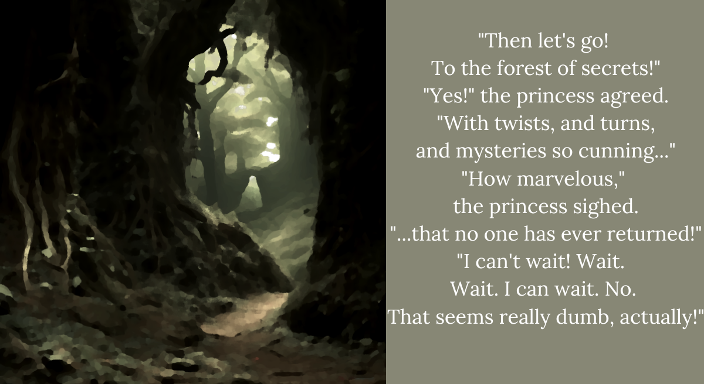

BBB3. The princess and the girl go exploring
But it was too late!
For bad ideas always spring on their chance.
They snuck into the kitchen…
and packed themselves lunches to last,
at least,
till 9PM.
They snuck into the royal dressery,
and found coats too big, but superbly warm,
and dragged them through quite a lot of dirt,
before abandoning them near a creek.
“I believe I’ve made a mistake!”
the princess cried out to the heavens,
because she, in fact, did.
“Do you even know where we are?”
“Of course I do! We’re in a swamp!”
For the first time in her life,
the princess felt some fight in her fists.
That was about two hundred pages ago. Just like the book told us, the mystery forest that no one ever escaped from, happens to be extremely hard to escape from. What an idea. What a revelation. How could we possibly have known?
“You should’ve picked the berries!” I shout. “The princess was hungry. If you picked the berries she wouldn’t have fainted before sundown!”
“The princess is too much of a fragile flower,” Shiori mutters. “The princess is slowing the commoner down.”
“The princess was DRAGGED INTO THIS FOREST by the commoner girl!”
“The princess had every right to refuse! It’s a free country!”
“Are you for real right now? It’s a monarchy, you moron!”
“She’s the princess, YOU moron!”
“D-don’t call me a moron!”
Oof. That sounded a little too wail-y for my comfort. I really need to stay out of the kitchen if I can’t handle it… Shiori looks a little sorry, but she’s got that look in her eye that says ‘Seriously? Seriously? You just called me one.’
Yorick is shivering in a little corner like both his parents are about to get a divorce. Man... What’s wrong with me? We’re both silent for a while.
“Um, I’m sorry. I said some mean things. And I know sometimes I’m a real bitch about not being able to take what I dish out.”
“... it’s okay,” Shiori mumbles, sitting down, and trying to comfort the frazzled Yorick. I’m starting to realize how much she hates fighting. “The two of us are stressed. We’ve been stuck here a long time.”
“Isn’t there another way to get through here?”
“There’s always multiple ways through a magi’s vault,” Shiori says, her voice getting a little more confident. “Perhaps, you are right. We can’t redo this story unless one of the characters dies. It may be better to take another approach.”
“But um, how do we find our way back?”
“Don’t worry,” Shiori grins. “Like I always say, every story has a trick or two to teach. To make sure we won’t get lost, I’ve been leaving bread crumbs that we can follow back. Guess where that one’s from?”
Um. Hold it in. Don’t say anything.
“Anyway, it should be easy to… oh… oops,” she halts.
“Is there a problem…?” I ask.
“I think a stray vannaknoe was following us and ate the crumbs…”
“I believe I’ve made a mistake!” I bury my face in my hands.
ENDING 3 REACHED: The Hansel and Gretel school of LandNav
Do your best, you two! I’m sure you can still reach the cellar! But not in any timeframe I’m willing to write! Try again?
RETURN